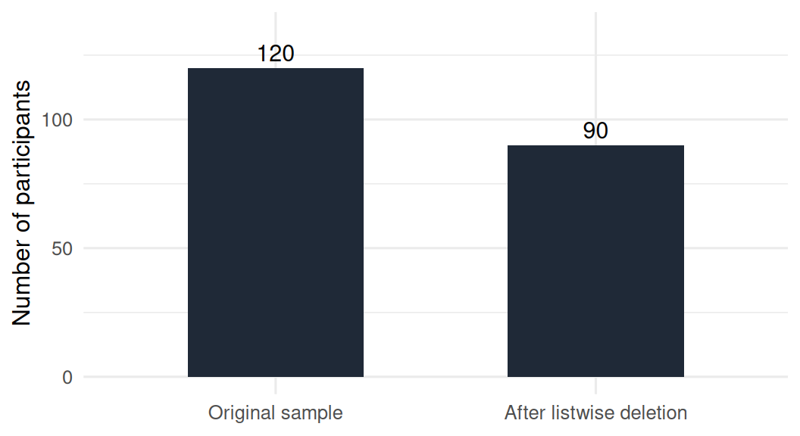
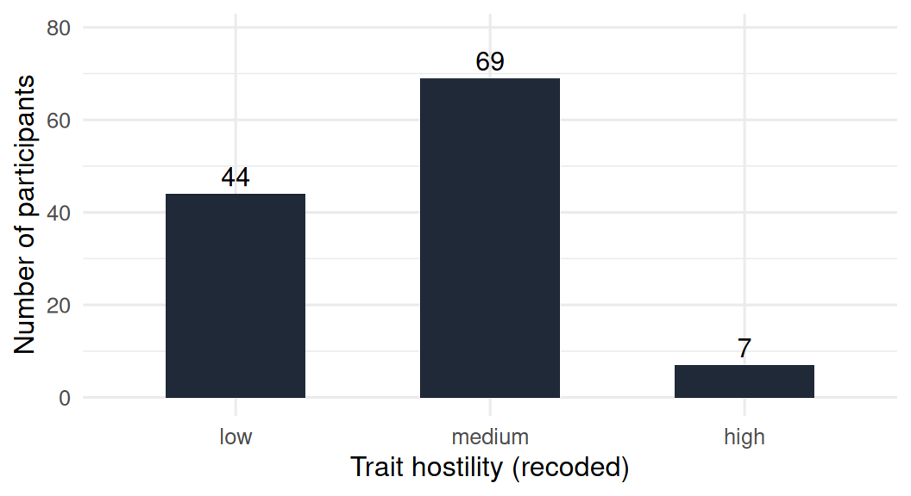
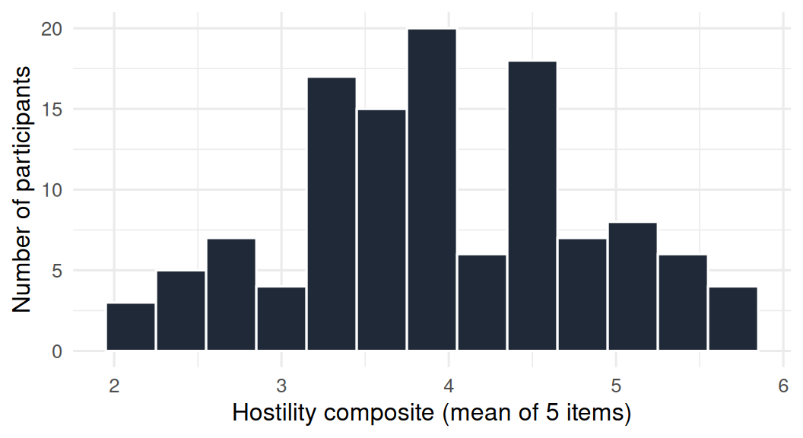
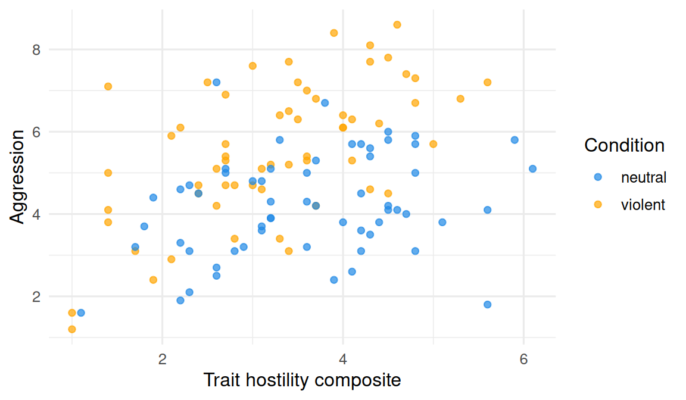
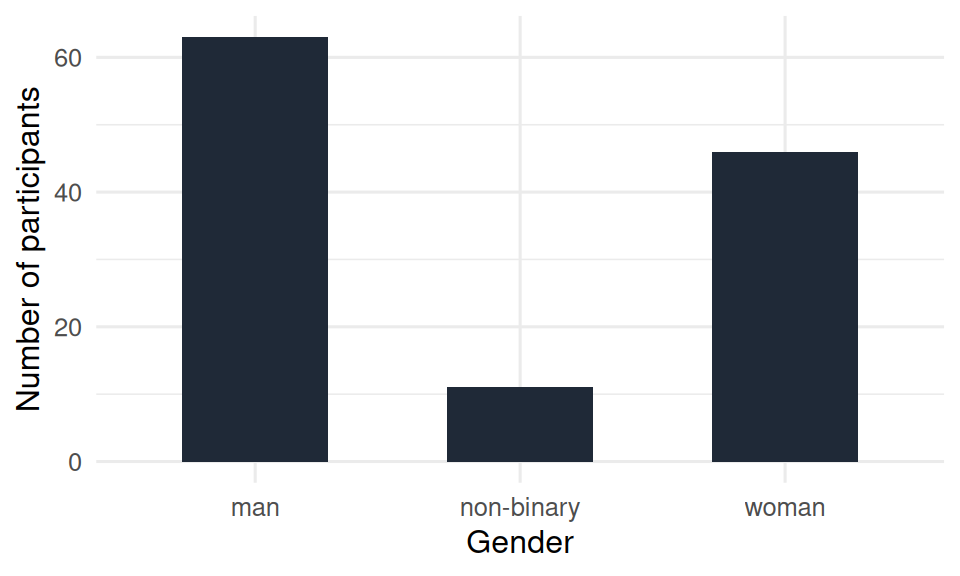
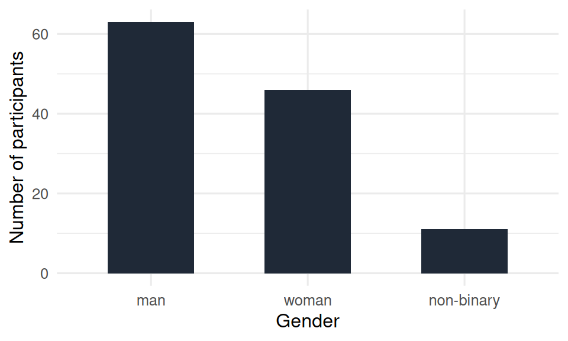

x <- c(4.2, 3.7, NA, 5.8, NA, 4.1)
is.na(x)
# [1] FALSE FALSE TRUE FALSE TRUE FALSE11 Wrangling for psychology research
11.1 Overview
Real research data rarely arrives in the clean, complete state of vgames_study.csv. Participants skip items, demographic categories need to be collapsed, multi-item questionnaires need to be combined into single scale scores, and categorical variables need to be told what order to appear in. This chapter covers the four wrangling skills you will use most often in psychology research:
- handling missing data,
- recoding variables with
case_when(), - computing composite scores from item-level data,
- working with factor variables and reference levels.
Each builds directly on the tidyverse tools from Chapter 9. The chapter assumes you have library(tidyverse) loaded.
11.2 Missing data
R uses a special value, NA, to represent “missing.” It is not zero, not blank, not a string; it is a marker that the value is unknown. Almost every real dataset has at least some missing values, and how you handle them affects every analysis you do.
11.2.1 Detecting missing values
The function is.na() returns TRUE for each element that is NA and FALSE otherwise:
To count the number of missing values in a vector:
sum(is.na(x))
# [1] 2sum() counts TRUE as 1 and FALSE as 0, so summing the logical vector gives the count of missings. To count missings in every column of a data frame:
sapply(data, function(col) sum(is.na(col)))This is usually the first thing to run on a fresh dataset. Knowing where the missings are tells you what you can and cannot analyze.
11.2.2 Computing with missing values
Most summary functions return NA when any input is missing, unless you tell them otherwise:
mean(x) # NA
mean(x, na.rm = TRUE) # 4.45na.rm = TRUE tells the function to remove missing values before computing. You will type this argument constantly. This was first introduced in Chapter 6.
11.2.3 Removing rows with missing values
Two common options:
# Keep only rows where every value is non-missing
complete_data <- data |> filter(complete.cases(data))
# Same idea, base R shorthand
complete_data <- na.omit(data)Both produce a data frame with only complete observations. This is called listwise deletion. It is the simplest approach and is sometimes appropriate, but it can lose a large fraction of your sample if missing values are scattered across many variables. Inspect how much you would lose before applying it:
nrow(data) # original sample size
sum(complete.cases(data)) # how many would survive listwise deletion11.2.4 Filling in missing values
For some variables, replacing missing values with a specific value is reasonable (for example, replacing missing free-text responses with "none"). tidyr::replace_na() does this:
data <- data |>
mutate(comments = replace_na(comments, "none"))Replacing numeric missings with the mean of the variable (mean imputation) is sometimes done but is statistically dubious; it shrinks variance and can bias correlations. For serious work, look up multiple imputation in a later course or the mice package.
11.2.5 Why this matters for your sample
The dataset you analyze is not always the dataset you collected. Below is a simple visualization of what happens when you apply listwise deletion to a hypothetical version of our data with some missing aggression scores: the sample shrinks, and (often) the participants who remain differ in subtle ways from those who were dropped.

The number always goes down when you delete. The question is by how much, and whether what is left is still representative.
11.3 Recoding with case_when()
The dplyr function case_when() is the general-purpose tool for “if this, then that; else if something else, then something else; else…” It is much more readable than nested ifelse() calls and accommodates any number of conditions.
The general form is a list of condition ~ value pairs:
data <- data |>
mutate(age_band = case_when(
age < 21 ~ "young",
age >= 21 & age < 23 ~ "middle",
age >= 23 ~ "older"
))R checks each row against the conditions in order. The first condition that matches wins. The result is a new variable age_band with one of three values for each participant.
case_when() is used constantly for:
- Collapsing categories. For example, combining several gender labels into a smaller set if cell sizes are small:
data <- data |>
mutate(gender_collapsed = case_when(
gender == "man" ~ "man",
gender == "woman" ~ "woman",
TRUE ~ "other"
))The last condition TRUE is a catch-all: any row that did not match a previous condition gets the value "other". (TRUE is always true, so it always matches.)
- Binning continuous variables. Creating a high/low split, or quartiles, or theoretically meaningful groups:
data <- data |>
mutate(hostility_group = case_when(
trait_hostility <= 3 ~ "low",
trait_hostility <= 5 ~ "medium",
trait_hostility > 5 ~ "high"
))A short visualization of the recoded variable confirms the counts:

A binary variable is a special case of the same pattern: two conditions, two values.
A general piece of advice. When you recode, keep both the original variable and the recoded one (use mutate() to add the new variable, not to overwrite the old). Your original measurement is what should appear in your data archive. Recoded variables are derived; if you change your mind about the recoding rules, you want to be able to start over from the original.
11.4 Computing composite scores
This is the most common wrangling task in psychology that the basic dplyr verbs do not address directly. A questionnaire study typically measures one construct (anxiety, openness, hostility, attitudes toward something) with several items. The analysis treats the construct as a single score per participant. Computing that single score from the individual items, correctly, is the centerpiece of this section.
The procedure has three steps:
- Inspect the items. Each row is one participant. Each item is one column.
- Reverse-score negatively-worded items. Some items are worded so that agreement indicates less of the construct (e.g., for a hostility scale: “I rarely lose my temper” should be reverse-scored, because high agreement means low hostility). Reversing is a single arithmetic step.
- Aggregate. Compute the participant’s mean (or sum) across the now-consistently-coded items.
We illustrate with a small synthetic dataset of five hostility items. (The vgames_study.csv file contains the already-aggregated trait_hostility variable, not the individual items, so we generate items here so you can see the procedure.)
# Five items on a 1-7 scale. h4 is negatively worded.
set.seed(42)
hostility <- data.frame(
participant_id = 1:120,
h1 = sample(1:7, 120, replace = TRUE),
h2 = sample(1:7, 120, replace = TRUE),
h3 = sample(1:7, 120, replace = TRUE),
h4 = sample(1:7, 120, replace = TRUE),
h5 = sample(1:7, 120, replace = TRUE)
)
head(hostility)11.4.1 Reverse-scoring an item
A 1-7 scale reverses with the formula 8 - x: a 1 becomes a 7, a 4 stays a 4, a 7 becomes a 1. More generally, for a scale from low to high, the reversed value of x is (low + high) - x. On a 1-5 scale that is 6 - x. On a 0-10 scale that is 10 - x.
To reverse-score item 4:
hostility <- hostility |>
mutate(h4_rev = 8 - h4)Note that we kept h4 and added h4_rev as a new variable. Do not overwrite the original; you want a clear audit trail of which items were reversed.
11.4.2 Computing the composite
Now that all five items code “high = more hostility,” the composite is the participant’s mean across the five items. The most readable form is explicit:
hostility <- hostility |>
mutate(hostility_score = (h1 + h2 + h3 + h4_rev + h5) / 5)For five items this is fine. With twenty items it becomes tedious, and rowMeans() is shorter:
hostility <- hostility |>
mutate(hostility_score = rowMeans(
cbind(h1, h2, h3, h4_rev, h5),
na.rm = TRUE
))rowMeans() takes a matrix or data-frame-like collection of columns and returns the row-wise mean. na.rm = TRUE makes it ignore missing items; without it, a participant who skipped one item would get an NA score. Most psychometric guidance recommends computing the mean only if the participant answered at least some minimum number of items (often two-thirds); flagging participants below that threshold is a separate step that we will not cover here.
11.4.3 Inspecting the result
The composite is a numeric variable on the same scale as the items. To check it, you would look at its distribution.

A composite score also lets you ask whether the construct is related to anything else. For example, is hostility related to aggression? A scatterplot answers that question directly.

(The plot uses the already-aggregated trait_hostility from vgames_study.csv. In your own analyses, the composite you computed and the scatterplot you draw on top of it follow exactly the same pattern.)
The scatterplot uses the visualization principles from Chapter 10: each participant is a single point, color encodes condition (with a colorblind-safe palette), axes are labeled in plain language, and the relationship between the two variables is visible at a glance.
11.5 Factor variables and reference levels
Categorical variables in R come in two flavors. A character vector is plain text. A factor vector is text plus an explicit list of allowed levels in a specific order. The distinction matters for analysis and for plotting.
11.5.1 Why factors
Most modeling functions in R (regression, ANOVA, t-test, mixed models) need a categorical predictor to be a factor. They use the factor’s first level as the reference category against which other levels are compared. By default, R sorts character vectors alphabetically when it converts them to factors:
factor(c("man", "woman", "non-binary"))
# Levels: man non-binary womanAlphabetical order is rarely what you want. For an experiment with a control and treatment condition, you almost certainly want control as the reference; alphabetically, control happens to come first, so you are lucky. For our vgames_study data, neutral and violent are also alphabetical, so we are lucky again. For man, non-binary, and woman, alphabetical puts man first, which is the default reference for any model that uses gender. Maybe that is what you want; maybe it is not. You should always set it explicitly.
11.5.2 Setting and changing reference levels
The forcats package (part of the tidyverse) makes factor manipulation readable. The most common operations:
fct_relevel() changes the order of levels. The level you put first becomes the reference:
data <- data |>
mutate(gender = fct_relevel(gender, "woman", "man", "non-binary"))After this, woman is the reference category. Models will compare man and non-binary to woman.
fct_recode() renames levels:
data <- data |>
mutate(condition = fct_recode(condition,
"Violent game" = "violent",
"Neutral game" = "neutral"
))This is useful for cleaning labels that arrived in inconsistent or unfriendly forms.
fct_lump() combines rare levels into “Other”:
data <- data |>
mutate(gender_lumped = fct_lump(gender, n = 2))n = 2 keeps the two most frequent levels and lumps the rest into Other. Useful when one of your categories has very few participants and your analysis would be unstable if you treated it as its own group.
11.5.3 Why factor order matters for plots
The order of factor levels controls the order in which categories appear on a plot. A plot of gender counts respects alphabetical order by default, which may not be the order you want to communicate.
Default (alphabetical) order:

Custom order (by frequency):

The data are identical. The second plot is easier to read because the bars are in a meaningful order (most frequent to least). fct_infreq() reorders a factor by descending frequency; fct_inorder() keeps the order in which levels first appear in the data; fct_relevel() lets you specify the order explicitly. Picking the right order is a small choice that consistently improves readability.
The same logic applies to models: reordering factor levels does not change the underlying data, but it changes which comparisons appear in the model output and which level is the reference. Setting factor order deliberately is part of preparing data for analysis, not just a cosmetic step for plots.
11.6 Check your understanding
1. What does NA mean in R?
2. What does mean(x) return when x is a numeric vector containing one or more NA values, by default?
3. What is “listwise deletion” (also known as keeping only complete cases) likely to do to your dataset?
4. What is case_when() used for?
5. When you create a recoded version of a variable, what is the recommended practice?
6. What is the formula to reverse-score an item that was answered on a 1-to-7 scale?
7. What does rowMeans() do when applied to several columns of a data frame?
8. Why does the order of levels in a factor variable matter for analysis?
9. What does fct_relevel(gender, "woman", "man", "non-binary") do?
10. Two bar charts of the same gender variable look different because one shows the bars in alphabetical order and the other in descending frequency. What is the relationship between the two plots?